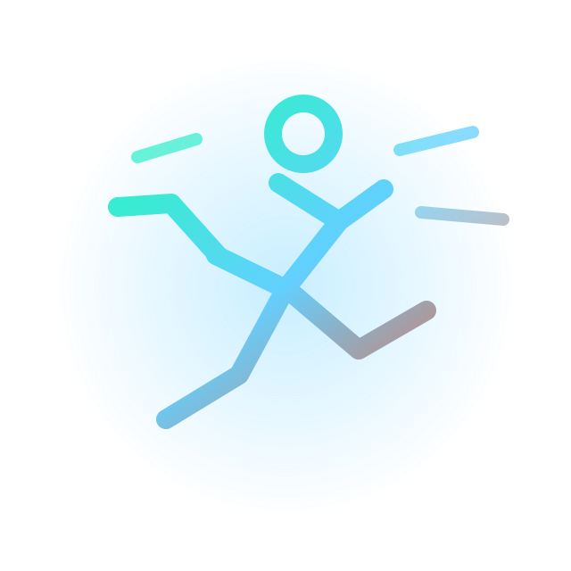
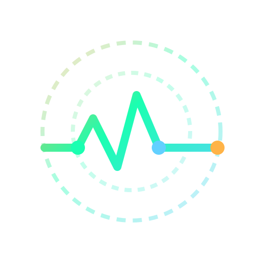

训练不是堆量，而是让刺激、恢复与营养在同一节奏里合拍。
Train hard. Learn precisely.
把训练、恢复和营养，讲成真正能落地的知识。
这个静态网站适合长期沉淀健身科普内容。你可以持续补充图片、文字和外部视频链接，让不同类型的内容都能稳定分享给别人。
- 5 内容分类
- 0 内容条目
- Focus 训练认知


每条内容既讲怎么做，也讲为什么有效，帮助建立长期运动判断力。
Athletic learning
Five lanes
五条内容主线
围绕训练实践、身体适应和日常习惯，把内容拆成清晰又互相联动的知识轨道。
Featured stack
精选专题
适合放你最想被看到的系列：动作拆解、训练计划、误区纠正或阶段性主题内容。
Knowledge library
内容索引
支持按分类筛选和关键词搜索。视频内容可以跳转到任意外部链接，图文内容则适合做知识卡片与长文入口。